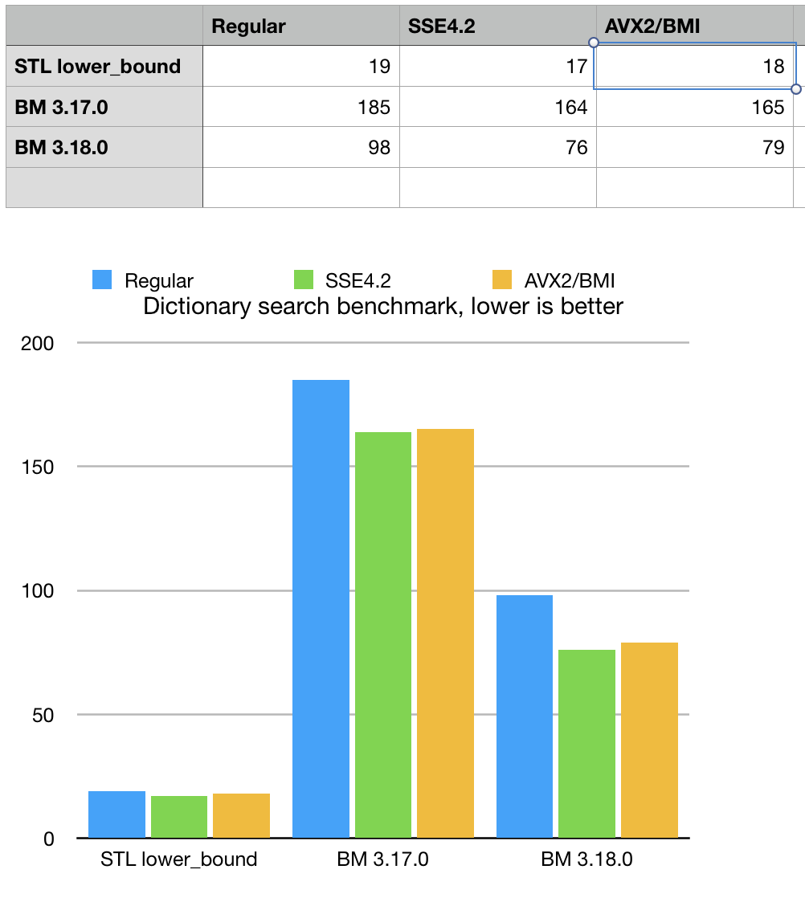

Version 3.18.0
Dec 26, 2018Release Notes

-
This release was about optimizations of search algorithms in bit-transposed sparse
strings (memory efficient dictionaries)
see
str_sparse_vector<>inbmstrsparsevec.hCurrent release implemented re-mapping of dictionary charactes based on their presense in the transposed plains. This trick is makes bit-matrix more succinct and facilitates faster search. bm::str_sparse_vector<>Optimizations resulted in 2x times improvement in both linear dictionary scan (unsorted column) and binary search (sorted index). Some extra large cases (hundreds of millions of strings) showed performance parity with STL map with up to 20x times (sic!) memory footprint advantage.
-
Example/benchmark for memory efficient dictionaries (it uses NASA NED extragalactic database)
updated to provide new performance metrics and explain optimization methods.
Tech.notes.
xsample05